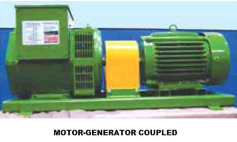
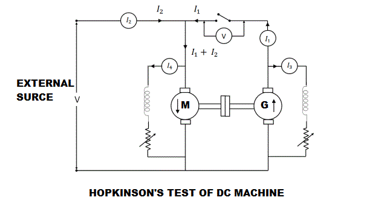
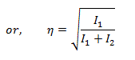
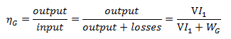
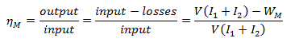

• Calculation of Efficiency
Efficiency of Generator
Efficiency of Motor
Advantages of Hopkinson's Test
• Disadvantages
Hopkinson's test is another useful method of testing the efficiency of a dc machine. It is a full load test and it requires two identical machines which are coupled to each other. One of these two machines is operated as a generator to supply the mechanical power to the motor and the other is operated as a motor to drive the generator. For this process of back to back driving the motor and the generator, Hopkinson's test is also called back-to-back test or regenerative test.
If there are no losses in the machine, then no external power supply would have needed. But due to the drop in the generator output voltage we need an extra voltage source to supply the proper input voltage to the motor. Hence, the power drawn from the external supply is therefore used to overcome the internal losses of the motor-generator set.
Connection Diagram of Hopkinson's Test

Here is circuit connection for the Hopkinson's test shown in figure below. A motor and a generator, both identical, are coupled together. When the machine is started it is started as motor. The shunt field resistance of the machine is adjusted so that the motor can run at its rated speed. The generator voltage is now made equal to the supply voltage by adjusting the shunt field resistance connected across the generator. This equality of these two voltages of generator and supply is indicated by the voltmeter as it gives a zero reading at this point connected across the switch. The machine can run at rated speed and at desired load by varying the field currents of the motor and the generator.

Calculation of Efficiency by Hopkinson's Test
Let, V = supply voltage of the machines.
Then, Motor input = V(I1 + I2)
I1 = The electric current from the generator
I2 = The electric current from the external source
And, Generator output = VI1..................(1)
Let, both machines are operating at the same efficiency 'η'.
Then, Output of motor = η x input = η x V(I1 + I2)
Input to generator = Output of the motor = η X V(I1 + I2)
Output of generator = η x input = η x [η x V(I1 + I2)] = η2
V(I1 + I2)..................(2)
From equation 1 an 2 we get,
VI1 = η2 V(I1 + I2) or I1 = η2 (I1 + I2)

Now, in case of motor, armature copper loss in the motor = (I1 + I2 - I4)2 Ra.
Ra is the armature resistance of both motor and generator.
I4 is the shunt field electric current of the motor.
Shunt field copper loss in the motor will be = VI4
Next, in case of generator armature copper loss in generator = (I1 + I3)2Ra
I3 is the shunt field electric current of the generator.
Shunt field copper loss in the generator = VI3
Now, Power drawn from the external supply = VI2
Therefore, the stray losses in both machines will be
W = VI2 - (I1 + I2 - I4)2 Ra + VI4 + (I1 + I3)2 Ra + VI3
Let us assume that the stray losses will be same for both the machines. Then,
Stray loss / machine = W/2
Efficiency of Generator
Total losses in the generator, WG = (I1 + I3)2 Ra + VI3 + W/2
Generator output = VI1
Then, efficiency of the generator,

Efficiency of Motor
Total losses in the motor, WM = (I1 + I2 - I4)2 Ra + VI4 + W/2
Motor input = V(I1 + I2)
Then, efficiency of the motor,

Advantages of Hopkinson's Test
The merits of this test are…
1. This test requires very small power compared to full-load power of the motor-generator coupled system. That is why it is economical.
2. Temperature rise and commutation can be observed and maintained in the limit because this test is done under full load condition.
3. Change in iron loss due to flux distortion can be taken into account due to the advantage of its full load condition
Disadvantages of Hopkinson's Test
The demerits of this test are
1. It is difficult to find two identical machines needed for Hopkinson's test.
2. Both machines cannot be loaded equally all the time.
3. It is not possible to get separate iron losses for the two machines though they are different because of their excitations.
4. It is difficult to operate the machines at rated speed because field currents vary widely.
 by
by